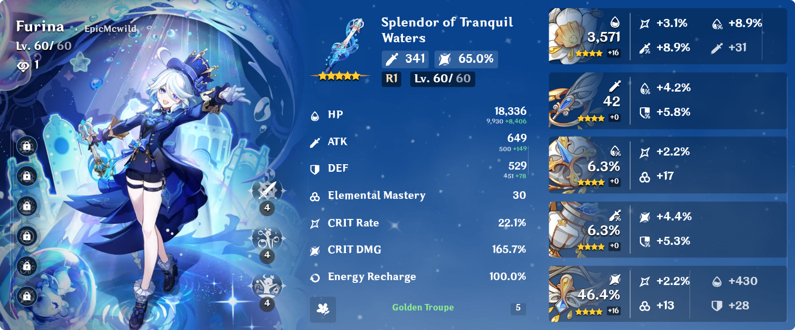
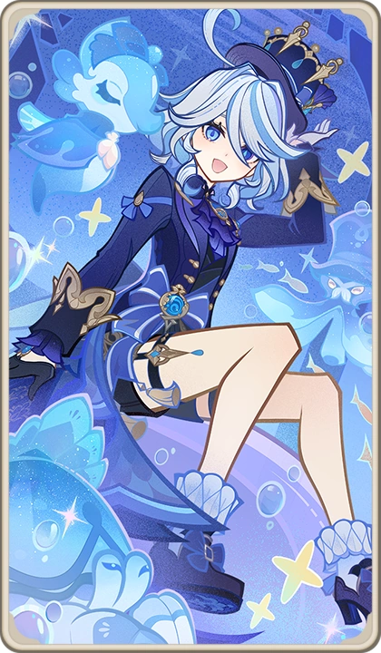

Guide to Building Furina

Furina is a Hydro SubDPS character who can do massive amount of damage, boost DMG, and heal with her skill. She scales off of HP%, so building her is relatively straightforward. You can build her as either a supporting character or a subDPS. You can run her as a DPS but that requires more constellations. You should be running Golden Troupe on her for her maximum potential. It also boosts her skills and ultimate.
What are the Best Affixes for Furina?
- HP%
- CRIT DMG
- CRIT RATE
- ER
What Affixes do I Prioritize?
When working on her artifacts, you should be prioritizing HP% over everything else. Furina heals and boosts team DMG based on her maximum HP. If you are going for a subDPS build, then CRIT DMG is next, but you could also switch the order of these two. Personally I put crit DMG over HP%. Next is your CRIT RATE. You want at least 50 CRIT RATE so that you are critting 50% of the time. Lastly, do not worry about getting ER. It's good, but not as important as the other affixes.

More information about Furina's build and gameplay strategies can be found below:
Furina Build